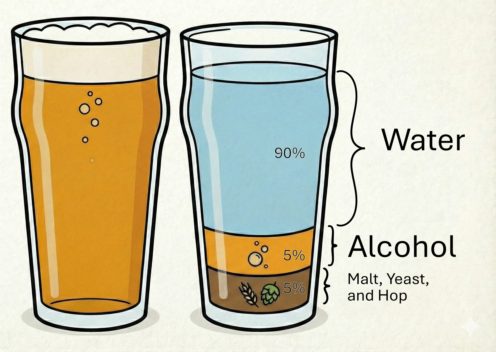
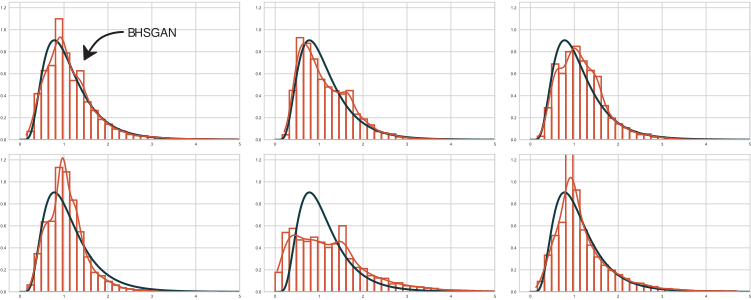
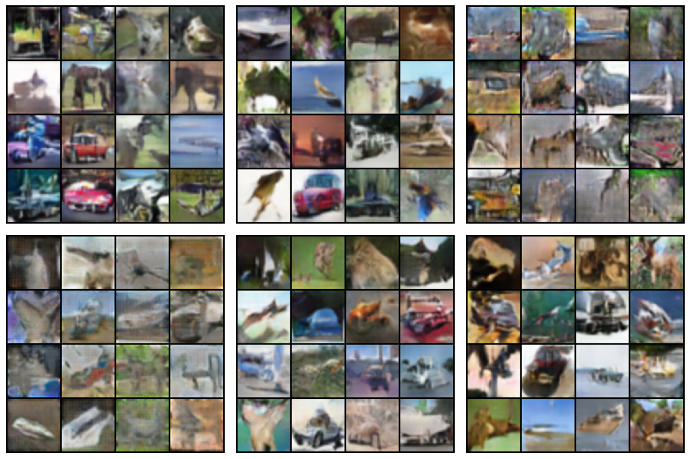

Beyond Aitchison
Generalized Geometries for Compositional Data
Dobrý Den!

Compositional Data and Aitchison Geometry
Compositional Data
Formally, the sample space of compositional data is a simplex (Aitchison (1982)):
\[\begin{equation} \mathcal{S}^D = \left\{x\in\mathbb{R}^D_+\cup\{0\}| \sum_{i=1}^Dx_i=\kappa \right\} \end{equation}\] for some \(\kappa>0\).
Example 1 (Compositional Beer)

Treat a glass of beer as a multivariate observation where the relative composition rather than the absolute composition is relevant.
Problem with relative Compositions
Increasing any of the components leads to a decrease in all other components since \(\sum_{i=1}^D{x_i}=\kappa\)
\(\implies\) spurious correlation
We need to define a field structure that allows for the usual operations addition and multiplication.
Relax the summing constraint to allow scale invariance:
\[\begin{equation} \tilde{\mathcal{S}}^D = \left\{x\in\mathbb{R}^D_+| \forall \kappa >0 \exists ! \beta>0\: : x=\beta\mathcal{C}_{\kappa}(x) \right\} \end{equation}\]
where
\[\begin{equation*} \mathcal{C}_{\kappa}(x) = \left(\frac{\kappa x_1}{\sum_{i=1}^Dx_i},...,\frac{\kappa x_D}{\sum_{i=1}^Dx_i}\right) \end{equation*}\]
Euclidean Geometry vs. Aitchison Geometry
Euclidean Geometry
For \(x,y\in\mathbb{R}^D\) and \(\alpha\in\mathbb{R}\) define \[\begin{align} x\oplus y &= (x_1+y_1,...,x_D+y_D)\\ \alpha \odot x &= (\alpha x_1,...,\alpha x_D)\\ \langle x,y\rangle_{\mathbb{R}^D} &= \sqrt{\sum_{i=1}^D x_iy_i} \end{align}\]
Aitchison Geometry
For \(x,y\in\tilde{\mathcal{S}}^D\) and \(\alpha\in\mathbb{R}\) define \[\begin{align} x\oplus y &= (x_1y_1,...,x_Dy_D)\\ \alpha \odot x &= (x_1^\alpha ,...,x_D^\alpha )\\ \langle x,y\rangle_{\tilde{\mathcal{S}}^D} &= ? \end{align}\]
Centered Log-Ratio to the Rescue!
Map the data back to \(\mathbb{R}^D\) using the Centered Log-Ratio (clr):
\[\begin{equation} \mathrm{clr}(x) = \left(\log\left(\frac{x_1}{g(x)}\right),...,\log\left(\frac{x_D}{g(x)}\right)\right)\: \in\mathbb{R}^D \end{equation}\]
where \(g(x) = \left(\prod_{i=1}^D x_i\right)^{\frac{1}{D}}\) is the geometric mean.
Define
\[\begin{equation} \langle x,y \rangle_{\tilde{\mathcal{S}}^D} = \langle\mathrm{clr}(x),\mathrm{clr}(y)\rangle_{\mathbb{R}^D} \end{equation}\]
Pawlowsky-Glahn and Egozcue (2001) showed that a \((D-1)\)-dimensional Hilbert space structure can be obtained on \(\tilde{\mathcal{S}}^D\).
Constructing a Hilbert Space for Distributions with the Aitchison Geometry
Extending the Aitchison Geometry
\(\tilde{\mathcal{S}}^D\) is finite dimensional, but we would like to work with probability distributions!
Some (measure theoretic) ground work…
- Denote by \(\mathcal{M}\) the set of \(\sigma\)–finite measures on some Borel measurable space \((\Omega,\mathcal{B})\) that are equivalent to a \(\sigma\)–finite base measure \(\lambda\) on \(\mathcal{B}\).
- Then, \(\mu\) and \(\nu\) are called \(B\)–equivalent, denoted by \(\mu=_{B(\lambda)}\nu\), if there exists a constant \(c>0\) such that \(\mu(A) = c\nu(A)\) for all \(A\in\mathcal{B}\) with the convention \(c\cdot (+\infty) = +\infty\).
- Define \(B(\lambda)\) as the set of \(=_B\)–equivalent classes, i.e., the quotient space \(\mathcal{M}(\lambda)/=_B\).
The relation \(=_B\) is an equivalence relation on \(\mathcal{M}(\lambda)\)!
Pertubation and Powering for Measures
for \(R\in\mathcal{B}\) define the perturbation of \(\mu\) by \(\nu\), the powering of \(\mu\) for a scalar \(\alpha\in\mathbb{R}\), and the negative perturbation in \(B(\lambda)\) as \[\begin{align*} (\mu \oplus \nu)(R) &:= \int_R\frac{\mathrm{d}\mu}{\mathrm{d}\lambda}\frac{\mathrm{d} \nu}{\mathrm{d} \lambda}\: \mathrm{d} \lambda,\\ \quad (\alpha \odot \mu)(R) &:= \int_R\left(\frac{\mathrm{d} \mu}{\mathrm{d} \lambda}\right)^\alpha \mathrm{d} \lambda,\\ \quad (\mu \ominus \nu)(R)&:= \int_R \frac{\mathrm{d} \mu}{\mathrm{d} \nu}\:\mathrm{d}\lambda. \end{align*}\]
Here, \(\frac{\mathrm{d}\mu}{\mathrm{d\nu}}\) denotes the radon nikodym density of \(\mu\) w.r.t. \(\nu\).
clr for Measures
According to Boogaart, Egozcue, and Pawlowsky-Glahn (2010) the space \(B^p(\lambda),\: p\geq 1\) of \(\lambda\)–equivalent measures defined as \[\begin{equation*} B^p(\lambda) := \left\{\mu \in B(\lambda):\int |\log\left(\frac{\mathrm{d} \mu}{\mathrm{d} \lambda}\right)|^p\mathrm{d} \lambda <+\infty\right\} \end{equation*}\] is a vector subspace of \(B(\lambda)\).
We can use that to define the map \(\mathrm{clr}:B^1(\lambda)\to L_0^1(\lambda)\)1 \[\begin{equation*} \mathrm{clr}(\mu) = \log\left(\frac{\mathrm{d}\mu}{\mathrm{d}\lambda}\right)-\int\log\left(\frac{\mathrm{d}\mu}{\mathrm{d}\lambda}\right)\mathrm{d}\lambda \end{equation*}\]
Properties of the clr for Measures
Theorem 1 (Van den Boogaart, Egozcue, and Pawlowsky-Glahn (2014))
- \(\mathrm{clr}:B^1(\lambda)\to L_0^1(\lambda)\) is linear.
- \(\mathrm{clr}:B^1(\lambda)\to L_0^1(\lambda)\) is invertible.
Thus, \(clr\) is an isomorphism!
Bayes Hilbert Spaces
Let \(p_\mu\) and \(p_\nu\) be two Radon-Nikodym densities in \(B^2(\lambda)\). Then, the inner product \(\langle p_\mu(x), p_\nu(x) \rangle_{B^2(\lambda)}\) is defined as:
\[\begin{equation*} \int_\Omega \mathrm{clr}(\mu)\mathrm{clr}(\nu)\lambda(\mathrm{d} x). \end{equation*}\]
Theorem 2 (Van den Boogaart, Egozcue, and Pawlowsky-Glahn (2014)) \(B^2(\lambda)\) is a separable Hilbert space and the map \(\mathrm{clr}:B^2(\lambda)\to L^2_0(\lambda)\) is an isometry of Hilbert spaces.
Constructing a Metric in \(B^2(\lambda)\)
Since \(\langle p_\mu(x), p_\nu(x) \rangle_{B^2(\lambda)}\) is an inner product we can construct a metric \(d_{B^2(\lambda)}(\mu,\nu)\) for measures:
\[\begin{align*} d_{B^2(\lambda)}&: B^2(\lambda)\times B^2(\lambda) \to [0,\infty),\\ d_{B^2(\lambda)}&(p_\mu, p_\nu):= \left(\langle p_\mu \ominus p_\nu, p_\mu \ominus p_\nu \rangle_{B^2(\lambda)}\right)^\frac{1}{2} \end{align*}\]
A first little result:
Lemma 1 Let \(p_\mu\) and \(p_\nu\) be two Radon–Nikodym densities in \(B^2(\lambda)\). Then, \[\begin{equation*} d_{B^2(\lambda)}(p_\mu,p_\nu)^2 =\mathrm{Var}_\lambda(\log(\mu\ominus\nu)). \end{equation*}\]
How can we utilize \(d_{B^2(\lambda)}(p_\mu,p_\nu)^2\)?
(Pseudo) \(f\)-Divergences
\(f\)-divergences (Example)
Example 2 KL Divergence
Let \(\lambda\) be the Lebesgue measure on \({\mathbb{R}}\), \(\mu\sim \mathcal{N}(\mu_1,\sigma_1)\), and \(\nu\sim\mathcal{N}(\mu_2,\sigma_2)\). Then,
\[\begin{align*} D_{\mathrm{KL}}(\mu,\nu) &= \int_\mathbb{R} p_\nu(x)\log\left(\frac{p_\mu(x)}{p_\nu(x)}\right)\lambda(\mathrm{d} x)\\ &= ...\\ &= \log\left(\frac{\sigma_2}{\sigma_1}\right) + \frac{\sigma_1^2 + (\mu_1-\mu_2)^2}{2\sigma_2^2} - \frac{1}{2} \end{align*}\]\(f\)-divergences
Let \(f:{\mathbb{R}}_+\to{\mathbb{R}}\) be a convex, lower-semicontinuous function, satisfying \(f(1) = 0\). Then, the \(f\)-divergence with generator \(f\) is defined as
\[ D_{f}(\mu,\nu) = \int_{\mathbb{R}}p_\nu(x)f\left(\frac{p_\mu(x)}{p_\nu(x)}\right)\lambda(\mathrm{d}x). \]
Estimating \(f\)-divergences
Problem: How to compute a divergence from finite samples if the underlying distribution is unknown?
Idea: Find an easier to estimate lower bound for \(f\)-divergence!
Theorem 3 (Nguyen, Wainwright, and Jordan (2010)) For any \(f\)-divergence the lower bound
\[ D_f(\mu,\nu) \geq \sup_{T\in\mathcal{T}}\left\{{\mathbb{E}}_\mu (T) - {\mathbb{E}}_\nu(f^*\circ T)\right\}. \]
is true, where
\[ \mathcal{T} = \mathcal{T}_{f^*} := \{T:{\mathbb{R}}\to\mathrm{dom}(f^*)|T\text{ is } {\mathcal{B}}\text{-measurable}\} \]
Now, what is \(f^*\)?
Fenchel Conjugate
Define for an arbitrary function \(f:{\mathbb{R}}\to{\mathbb{R}}\)
\[ f^*(y) := \sup_{x\in \mathrm{dom}(f)}\{xy-f(x)\}. \] Then, \(f^*\) is called Fenchel- or convex-conjugate of \(f\).
Example 3
| Name | \(f\) | \(\mathrm{dom}(f^*)\) | Conjugate \(f^*(t)\) |
|---|---|---|---|
| Kullback-Leibler (KL) | \(x\log(x)\) | \(\mathbb{R}\) | \(\exp(t-1)\) |
| Reverse KL | \(-\log(t)\) | \(\mathbb{R}_-\) | \(-1 - \log(-t)\) |
| Pearson | \(\frac{(t-1)^2}{t}\) | \(\mathbb{R}\) | \(\frac{1}{4}t^2+t\) |
| GAN | \(t\log(t)-(t+1)\log(t+1)\) | \(\mathbb{R}_-\) | \(-\log(1 - \exp(t))\) |
Fenchel Duality
Theorem 4 Let \(f:{\mathbb{R}}\to{\mathbb{R}}\) be a convex function. If \(f\) is lower semi-continuous, then \(f^{**}(x) = f(x)\) for all \(x\in{\mathbb{R}}\).
Note, that \[ f^{**}(x) = \sup_{y\in\mathrm{dom}(f^{*})}\{xy-f^*(y)\}. \]
Estimating \(f\)-divergences
(Nguyen, Wainwright, and Jordan 2010) proved:
Theorem 5 For any \(f\)-divergence, it holds that
Finding a Tight Bound
It turns out that under certain conditions the lower bound in
\[\begin{align} &\int_{\mathbb{R}} \sup_{t\in\mathrm{dom}(f^*)}\left\{t\frac{p_\mu(x)}{p_\nu(x)}-f^*(t)\right\} \nu(\mathrm{dx}) \\ &\quad\geq \sup_{T\in\mathcal{T}} \left(\int_\mathbb{R} T(x)\mu(\mathrm{d}x) - \int_\mathbb{R}f^*\circ T(x)\nu(\mathrm{d}x)\right)\tag{3} \end{align}\]
is tight!
(Nguyen, Wainwright, and Jordan 2010) also showed:
For \(\tilde{T} = f^\prime\left(\frac{p_\mu(x)}{p_\nu(x)}\right)\) the bound in \((3)\) is tight.
Connecting Aitchisons Geometry to \(f\)-divergences
Set \(f_{BHS}(x) = x\log(x)^2\). Then,
\[\begin{equation*} D_{f_{BHS}}(\mu,\nu)= d_{B^2(\mu)}(\mu,\nu)^2 + \mathbb{E}_\mu\left(\log(\mu\ominus \nu)\right)^2. \end{equation*}\]
Problem:
\(f_{BHS}(x) = x\log(x)^2\) is concave on \([0,\exp(-1)]\), so the estimation framework of Nguyen, Wainwright, and Jordan (2010) can’t be applied.
The ✨ Solution ✨
Decouple the convexity constraint by defining a piecewise conjugate:
\[\begin{align*} f_{*,\mathrm{BHS}}^*(x) &= \begin{cases} 2(-1-\sqrt{1+x})\exp(-1-\sqrt{1+x})&x\in[-1,0)\\ 2(-1+\sqrt{1+x})\exp(-1+\sqrt{1+x})&x\geq 0. \end{cases} \end{align*}\]
More questions:
- What does the lower
*indicate?
- How was \(f_{*,\mathrm{BHS}}^*(x)\) derived?
- Can we use \(f_{*,\mathrm{BHS}}^*(x)\) to estimate \(D_{f_{BHS}}(\mu,\nu)\)?
What does the lower * indicate?
Consider a continuous function \(f: [0, \infty) \to \mathbb{R}\), which is concave on \([0, a)\) for some \(a > 0\) and convex on \([a, \infty)\). Define the mixed conjugate \(f^*_*\) of \(f\) as
\[\begin{equation} f^*_*(t) := \sup_{x\in [a,\infty)}\{tx-f(x)\}\mathbb{I}_{\{t\in M\}}+\underbrace{\inf_{x\in [0,a)}\{tx-f(x)\}}_{=:f_* \hat{=}\text{ concave conjugate}}\mathbb{I}_{\{t\in N\}}, \end{equation}\]
where
\[\begin{align*} M &:= \big\{t\in\mathrm{dom}(f^*_*):\underset{x\in\mathrm{dom}(f)}{\mathrm{argmax}}(tx-f(x))\in [a,\infty) \big\},\\ N &:= \big\{t\in\mathrm{dom}(f^*_*):\underset{x\in\mathrm{dom}(f)}{\mathrm{argmin}}(tx-f(x))\in [0,a) \big\}. \end{align*}\]
We can use \(f_{*,\mathrm{BHS}}^*\) to estimate \(D_{f_{BHS}}(\mu,\nu)\)!
Theorem 6 (Lach, Fottner, and Okhrin (2025) (Informal))
Let \(f:[0,\infty) \to\mathbb{R}\), convex on \([a,\infty)\) with \(0< a<\infty\), concave on \([0,a)\), be sufficiently smooth and \(\mu,\nu\in B^2(\lambda)\).
Then, \(\tilde T(x) := f^\prime \left(\frac{p_\mu(x)}{p_\nu(x)}\right)\) is an optimizer for \[\begin{equation} \sup_{T\in C(M^*)}\big\{\left(\mathbb{E}_\mu(T)- \mathbb{E}_\nu(f^*_*\circ T)\right)\big\} + \inf_{T\in C(N^*)}\big\{(\mathbb{E}_\mu(T)- \mathbb{E}_\nu(f^*_*\circ T))\big\}. \end{equation}\]
Here, \(C(M^*)\) (\(C(N^*)\)) denotes the set of continuous functions \(T:\Omega\to \mathrm{dom}(f^*_*)\) such that \(f^*_* \circ T\) is convex (concave).
The Main Result
Corollary 1 For any function \(f\) satisfying the conditions of Theorem 6, there exists a \(\bar T:\Omega \to \mathrm{dom}(f^*_*)\) such that
\[\begin{equation} D_f(\mu,\nu) \geq \sup_{\bar T\in C(M^* )\cup C(N^* )}\bigg\{\mathbb{E}_\mu(\bar T)- \mathbb{E}_\nu(f^*_*\circ \bar T)\bigg\}. \end{equation}\]
Learning Distributions in Bayes Hilbert Spaces using GANs
A Quick Recap on GANs
Goodfellow et al. (2014) introduced Generative Adversarial Networks as a two-player minimax game with value function
\[\begin{equation} \min_G\max_D V(D,G) = \mathbb{E}_{x\sim p_{\mathrm{data}}(x)}(\log(D(x))+\mathbb{E}_{z\sim p_z(z)}(\log(1-D(G(z)))). \end{equation}\]
- \(G\) denotes a generative model that aims to approximate \(p_{\mathrm{data}}\)
- \(D\) denotes a discriminative model that aims to distinguish real samples \(x\sim p_{\mathrm{data}}\) from fake samples \(G(z)\) with \(z\sim p_z(z)\).
- Usually \(z\sim \mathcal{N}(0,1)\) or \(z\sim\mathcal{U}([0,1])\).
GANs in Practice
Parameterize the discriminator by an MLP-model \(T_\omega\) and the generator by an MLP-model \(\nu_\theta\).
- Since in \(V(D,G)\) the LHS (\(\mathbb{E}_{x\sim p_{\mathrm{data}}(x)}(\log(D(x))\)) does not depend on \(G\), we can train the generative model by maximizing the RHS (\(\mathbb{E}_{z\sim p_z(z)}(\log(1-D(G(z))))\)).
- To maximize \(V(D,G)\) w.r.t. the discriminative model, we have to maxmiize \(V(D,G)\) as a whole.
These two steps are perfromed iteratively, over and over.
Generalization to (pseudo) \(f\)-GANs
Nowozin, Cseke, and Tomioka (2016) introduced \(f\)-GANs which generalize GANs by incorporating \(f\)-divergences into the minimax game:
\[\begin{equation} \min_{\vartheta}\max_{\omega}F(\vartheta,\omega):= \min_{\vartheta}\max_{\omega} \mathbb{E}_{x\sim \mu}(T_\omega(x))-\mathbb{E}_{x\sim \nu_\vartheta}(f^*(T_\omega(x))) \end{equation}\]
and by utilizing Corollary 1 this can be further generalized to
\[\begin{align}\label{eq:vdm} \min_{\vartheta}\max_{\omega}F(\vartheta,\omega):= \min_{\vartheta}\max_{\omega} \mathbb{E}_{x\sim\mu}(\bar{T}_\omega(x))-\mathbb{E}_{x\sim \nu_\vartheta}(f^*_*(\bar{T}_\omega(x))). \end{align}\]
How well do these pseudo \(f\)-GANs work?
Distribution Estimation:
Train different GAN architectures on Lognormally distributed data
Estimate the shape and scale parameters of the generated data
Evaluate which GAN generates the distribution best

| Model | \(\mathrm{shape}=0.5\) | \(\mathrm{scale}=1\) |
|---|---|---|
| BHSGAN | \(0.5049 \pm 0.0104\) | \(1.0937 \pm 0.0227\) |
| Wasserstein | \(0.4220 \pm 0.0071\) | \(1.6670 \pm 0.0127\) |
| GAN | \(0.1952 \pm 0.0028\) | \(1.3422 \pm 0.0130\) |
| Pearson | \(0.6181 \pm 0.0240\) | \(0.6863 \pm 0.0183\) |
| KL | \(0.9951 \pm 0.0167\) | \(1.0126 \pm 0.0207\) |
| Reverse KL | \(0.8949 \pm 0.0178\) | \(0.7376 \pm 0.0120\) |
How well do these pseudo \(f\)-GANs work?

Experimental results for the CIFAR10 data set: Top row, from left to right: BHSGAN, KLGAN, and Reverse KLGAN. Bottom row, from left to right: Pearson GAN, original GAN, and Wasserstein GAN. Samples were drawn from the generators trained on the CIFAR10 dataset.
Conclusion
Summary
TL;DR:
Utilizing Aitchisons geometry in Bayes Hilbert spaces, we generalized \(f\)-divergences by allowing for local non-convexities which can improve the performance of generative models for tabular and image data.
Future Research Directions
ML Approaches
- Incorporate pseudo divergences in more sophisticated models such as VQ-GAN (Esser, Rombach, and Ommer 2020).
- Tailor divergence generating functions to specific data problems
Theoretical Approaches
- Show that local nonconvexities are not bound around the origin
- Embedd pseudo divergences into the framework of Birrell et al. (2022)
Thank You!
References
Linus Konstanzer